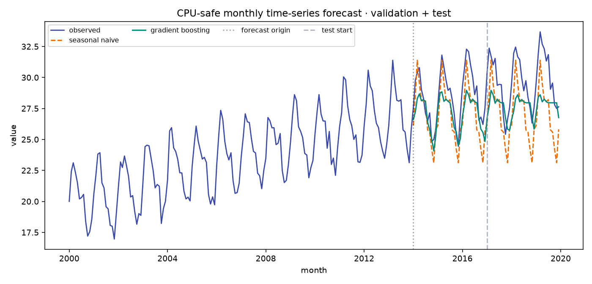

BASELINEREFERENCE
Seasonal naive
MAE—
RMSE—
12-month lagbest on run
CRISP-DM · TIME SERIES
A compact review surface for the monthly forecasting experiment—designed to make model quality, evaluation boundaries, and next steps legible at a glance.
OUTCOME SNAPSHOT
Metrics are loaded from outputs/metrics.json, not hard-coded into the interface.
lower error for the winning forecaster on the selected lens
EVALUATION ARTIFACT

MODEL INTEGRITY
Every feature for time t is built from observations strictly before t. Test predictions are recursive: each model prediction, never the future target, becomes the next history value.
The final 36 months are reserved for the reported future test window.
WORKFLOW TRACE
One small experiment, six disciplined hand-offs.
Evaluate a CPU-safe monthly forecasting workflow.
definedGenerate a reproducible seasonal signal with trend.
exploredBuild lag, change, and rolling-mean features.
preparedCompare seasonal naive with fixed HistGBR.
trainedScore MAE and RMSE on future-only rows.
verifiedReplace synthetic data and connect live inference.
next stepREPRODUCIBILITY
The dashboard is a lightweight static companion to the experiment. Regenerate the evidence, then refresh this page to review the new artifacts.
python -m src.experiment --output-dir outputspytest -qsuite verified Artifacts: metrics.json forecast_predictions.csv forecast_horizon_*.png